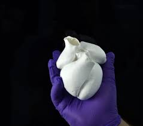

| Técnicas para su fabricación | ||
El bioingenieros de la Harvard John A. Paulson School of Engineering and Applied Sciences (SEAS) han desarrollado el primer modelo biohíbrido de ventrículos humanos con células cardíacas que laten alineadas helicoidalmente, y han demostrado que la alineación del músculo, de hecho, aumenta drásticamente la cantidad de sangre que el ventrículo puede bombear con cada contracción. |
 | |
Este avance fue posible gracias a un nuevo método de fabricación textil aditiva, el Focused Rotary Jet Spinning (FRJS), que permitió la fabricación de alto rendimiento de fibras alineadas helicoidalmente con diámetros que van desde varios micrómetros a cientos de nanómetros. Estas fibras FRJS desarrolladas en SEAS dirigen la alineación de las células, lo que permite la formación de estructuras controladas de ingeniería de tejidos. |